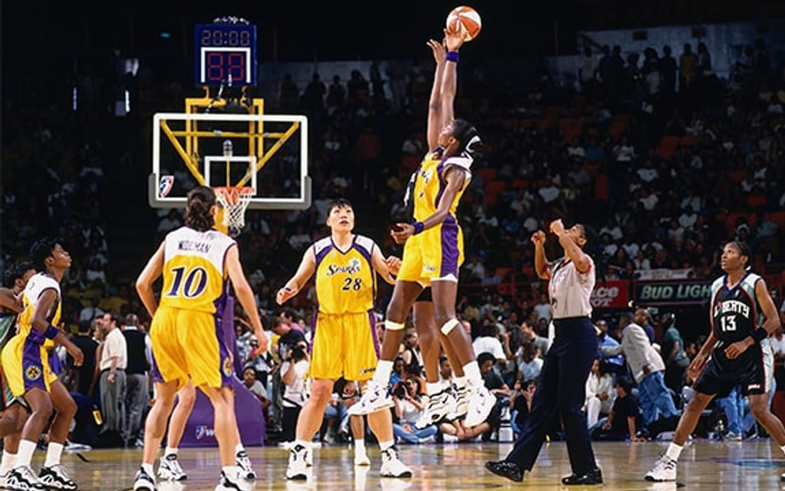
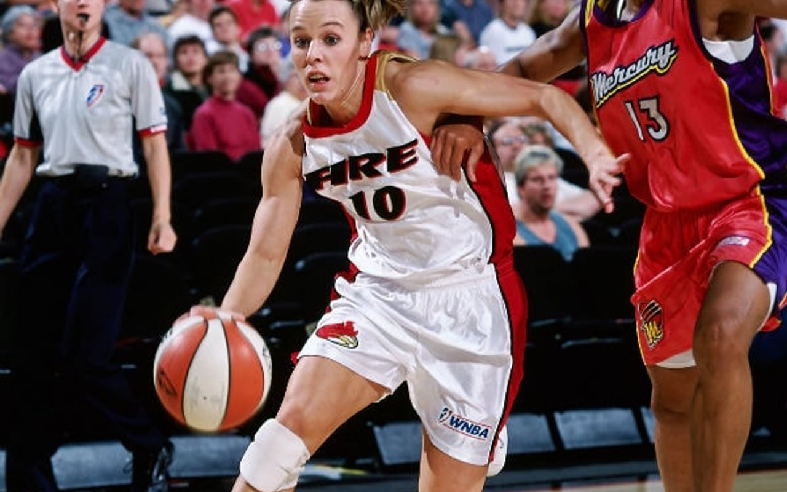
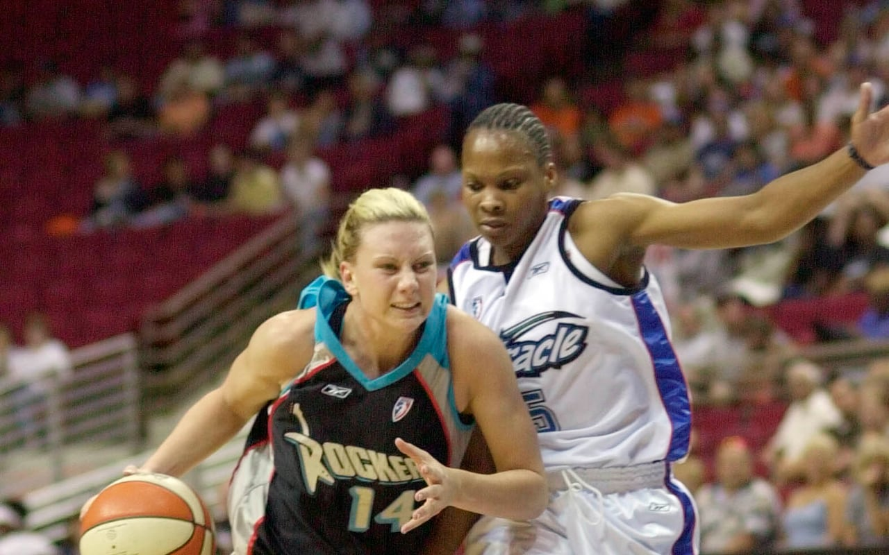
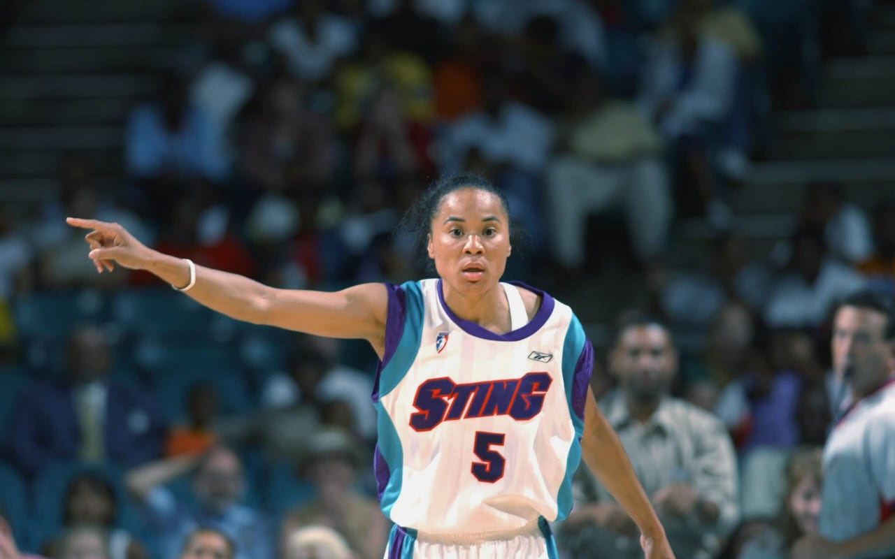
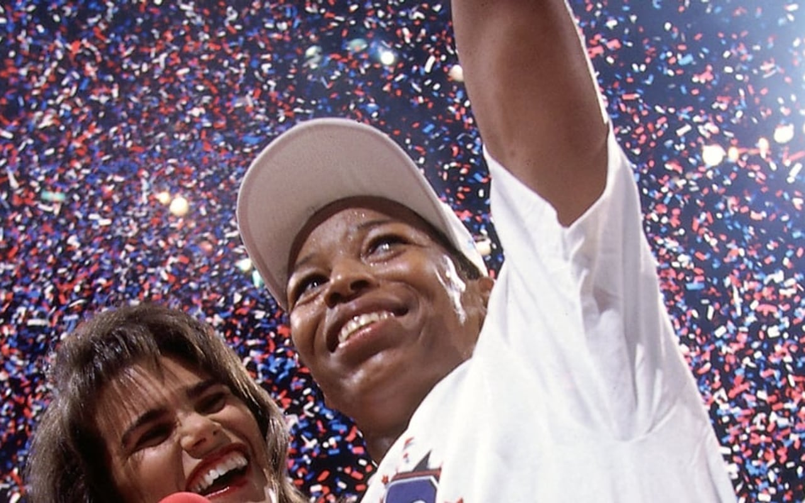
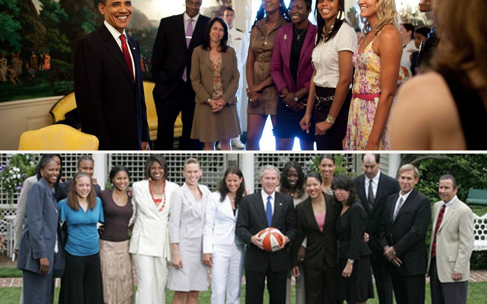
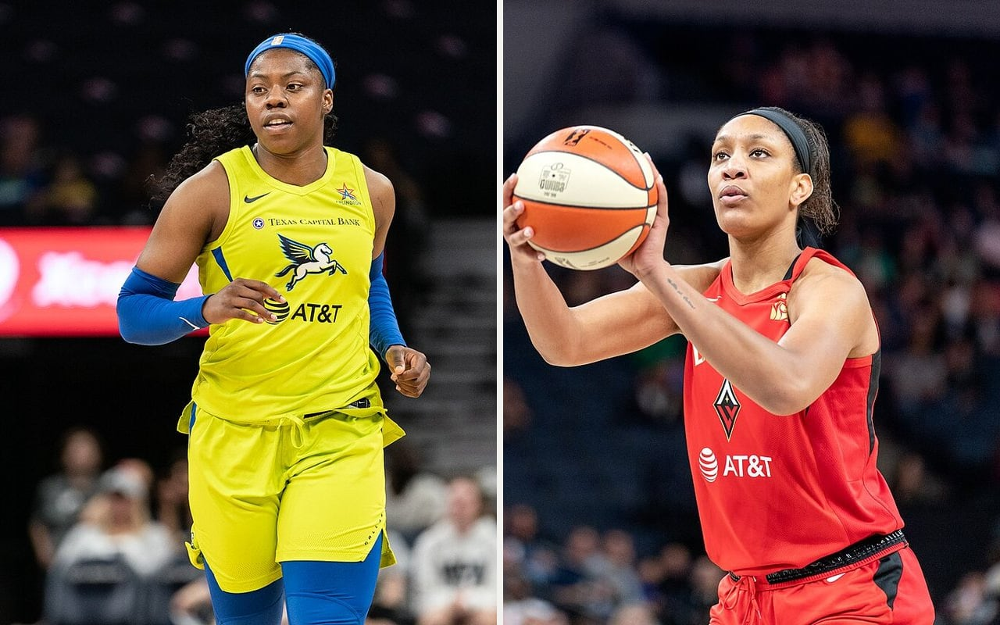
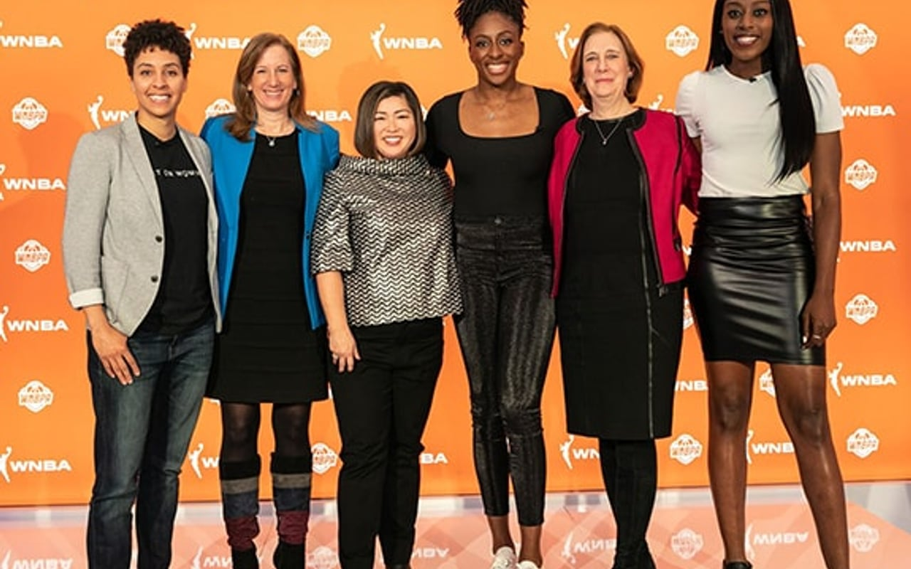

The League
How has the league grown — and for whom?
“How has the growth of the WNBA changed opportunities for women in sports over time?”
In 1997, eight teams played the WNBA's first season. The league nearly doubled by
2000, riding the optimism of the era — and then a decade of contraction
followed. Miami and Portland folded in 2002, Cleveland in 2003, Charlotte in 2007.
The Houston Comets won the league's first four championships and still disappeared
in 2008; the Sacramento Monarchs, champions in 2005, were gone a year later. Detroit's
three-time champions were relocated to a smaller market. For fifteen years afterward
the league held at exactly twelve teams — a long plateau in which every roster
spot was scarce and every franchise's survival was an achievement. Now the map is
growing again: Golden State in 2025, Toronto and Portland in 2026. The chronology
below was checked against Across the
Timeline and official WNBA history
records.
Three decades, one line
Scroll, and the league's life draws itself: orange for arrivals, gray for
the franchises that vanished, blue for the ones that moved. This is the site’s
single timeline; its photographs and event-level sources are linked inside each
entry.
1997
The league opens
Eight teams play the WNBA's first season. Los Angeles and Phoenix are among
the originals still playing today.

2000
Peak of the boom
Rapid expansion doubles the league to sixteen teams — a size it has
never reached again.

Portland Fire rookie Jackie Stiles during the league’s sixteen-team era ·
WNBA/NBAE
2002–03
The first collapse
Miami and Portland fold. Utah flees to San Antonio, Orlando to Connecticut,
and Cleveland plays its final season.

2006
Charlotte goes dark
An original 1997 franchise, the Sting, plays its last game.

Dawn Staley directs the Charlotte Sting, whose final season came in 2006 ·
WNBA/NBAE
2008
The unthinkable
The Houston Comets — winners of the league's first four
championships — fold. Even dynasties were not safe.

Cynthia Cooper celebrates the Comets’ first championship; the four-time champions folded in 2008 ·
WNBA/NBAE
2009
Champions vanish
Sacramento's 2005 champions disappear; Detroit's three-time champions play
their final season in Michigan before moving to Tulsa.

2010–24
The long plateau
Exactly twelve teams for fifteen years. Every roster spot is scarce; every
franchise's survival is an achievement.

2016 · 2018
The nomads settle
Tulsa becomes Dallas; San Antonio becomes Las Vegas — the franchise
that began as the Utah Starzz finds its fourth home.

2020
The turning point
A landmark collective bargaining agreement nearly doubles top salaries and
begins to end the forced overseas winters.

2024
The surge
A record-breaking rookie class arrives and attendance leaps to heights
unseen in a generation.

Caitlin Clark and Napheesa Collier meet at Target Center during the record-setting 2024 season ·
John Mac, Wikimedia Commons (CC BY-SA 2.0)
2025–26
Expansion returns
Golden State, then Toronto — and Portland, whose city lost its team in
2002, gets one back 24 years later. The map begins to heal.

Each team is roughly twelve roster spots: when the league contracts, careers end
overnight; when it expands, doors open. But opportunity is not only about roster
spots — it is about whether a player can afford to stay. For most of league
history, salaries were low enough that stars spent every offseason playing overseas.
The 2020 collective bargaining agreement began to change that structure by raising
compensation and improving working conditions (WNBA
and WNBPA 2020).
What the timeline shows
Growth has not been a smooth upward line. The early expansion created more teams,
contraction removed jobs even from championship franchises, relocation shifted
opportunity between cities, and the long twelve-team plateau kept roster space
scarce. The return of expansion changes that opportunity again, but the history warns
against treating a new franchise as permanent by default.
The timeline is therefore more than league business history. It shows how
institutional decisions determine where professional careers can exist, which cities
retain their basketball history, and how much room the sport makes for women to stay
in the profession.

{kind=link}
{kind=link}
.jpg){kind=link}
{kind=link}
.jpg){kind=link}
{kind=link}
{kind=link}